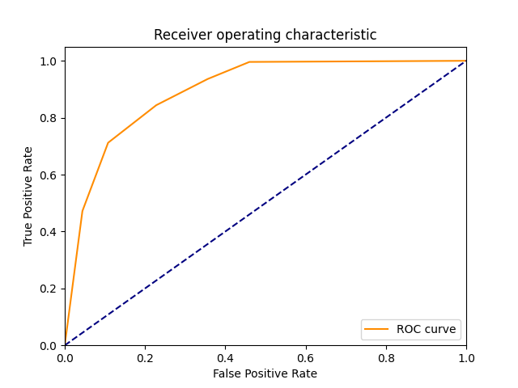
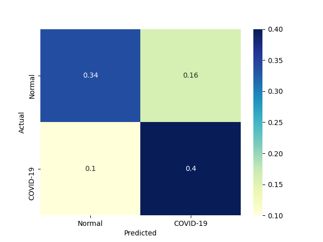

| 1 |
RealBoost |
An RealBoost classifier |
6918.043572 |
1.186874 |
207 |
203 |
47 |
43 |
0.828 |
0.812 |
0.814961 |
0.820 |
0.180 |
0.821429 |
1.293766 |
0.000119 |
0.692094 |
|
 |
 |
| 7 |
LinearSVM |
Linear Support Vector Classification |
1070.059191 |
2.685958 |
203 |
204 |
46 |
47 |
0.812 |
0.816 |
0.815261 |
0.814 |
0.186 |
0.813627 |
1.270174 |
0.000760 |
0.302919 |
|
|
|
| 6 |
KNeighborsClassifier |
Classifier implementing the k-nearest neighbors vote |
0.268736 |
12.052862 |
211 |
193 |
57 |
39 |
0.844 |
0.772 |
0.787313 |
0.808 |
0.192 |
0.814672 |
1.249301 |
3.031499 |
0.067592 |
|
 |
 |
| 0 |
DiscreteNBC |
DiscreteNBC |
662.289656 |
378.040635 |
200 |
170 |
80 |
50 |
0.800 |
0.680 |
0.714286 |
0.740 |
0.260 |
0.754717 |
1.055402 |
0.001140 |
0.001996 |
 |
 |
 |
| 4 |
GaussianNBC |
Gaussian Naive Bayes (GaussianNB) |
16.866846 |
11.412571 |
206 |
154 |
96 |
44 |
0.824 |
0.616 |
0.682119 |
0.720 |
0.280 |
0.746377 |
1.014543 |
0.044251 |
0.065400 |
 |
 |
|
| 3 |
ComplementNBC |
The Complement Naive Bayes classifier described in Rennie et al |
5.587937 |
1.033964 |
192 |
136 |
114 |
58 |
0.768 |
0.544 |
0.627451 |
0.656 |
0.344 |
0.690647 |
0.895567 |
0.123596 |
0.667961 |
 |
 |
 |
| 5 |
MultinomialNBC |
Naive Bayes classifier for multinomial models |
5.218324 |
1.051527 |
192 |
136 |
114 |
58 |
0.768 |
0.544 |
0.627451 |
0.656 |
0.344 |
0.690647 |
0.895567 |
0.132350 |
0.656804 |
 |
 |
 |
| 2 |
BernoulliNBC |
Naive Bayes classifier for multivariate Bernoulli models |
13.795478 |
2.537731 |
203 |
71 |
179 |
47 |
0.812 |
0.284 |
0.531414 |
0.548 |
0.452 |
0.642405 |
0.759983 |
0.046566 |
0.253141 |
 |
 |
 |
{kind=link}
{kind=link}
{kind=link}
{kind=link}
{kind=link}
{kind=link}
{kind=link}
{kind=link}